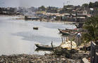

登陆
|
注册
不可错过
最新发生
最多点击
热门话题
公民新闻
站内好友分享
贴到个人博客
常见问题
举报视频
转换邮件
片段分享
一键转帖：
开心
人人
豆瓣
QQ空间
白社会
新浪微博
网络电视台第2集相关视频
更多
资讯
[视频]中国医疗队在海地搭建首个流动医疗点
[视频]地震特写 生命奇迹
[视频]海地发生7级强烈地震 当地遭严重破坏
[组图]联合国举行活动悼念海地地震遇难者
[组图]沉痛送别海地地震遇难中国维和警察遗体台
[组图]海地地震
网络电视台第2集相关新闻
更多
资讯
[视频]李娜战胜大威闯入澳网四强
央视网综合消息:2010赛季澳大利亚网球公开赛女单1/4决赛在墨尔本继续进行，中国一姐李娜尽管在首盘比赛被7届大满贯冠军大威的攻势所震，但逐渐适应节奏后破掉对手的发球胜赛局顽强将比赛拖入抢七，经历决胜盘的破发大战的洗礼将大威拖垮，以2-6，7-6(4)，7-5的比分险胜，闯入四强后创下了个人大满贯最佳成绩。中国两朵金花齐聚四强则又一次创造历史，同时李娜也将在下周的排名中成为首位打进top10的中国球员，她的半决赛对手将是卫冕冠军小威与白俄...
网络电视台第2集相关评论
更多
资讯
欢迎您：游客！
请注册登录后发表评论
快速注册
我要登录
评论列表
共
10
条记录
【祈福海地】收集的部分为海地地震捐款的方式
红十字会的短信捐款方式个人觉得还是比较方便的……貌似以前汶川地震也是这个号么……可惜捐助额太少，记得以前汶川那时好像有一次捐30的选项。
ArielSharon
发表于2010-1-29 21:23:25
回复
【祈福海地】收集的部分为海地地震捐款的方式
祝福吧
aqa0000
发表于2010-1-29 21:25:28
回复
【祈福海地】收集的部分为海地地震捐款的方式
看到那些受难的图片，很难过，二十万的生灵啊，尤其是那些孩子，不知不觉中眼泛泪光了
千面神客
发表于2010-1-29 21:28:32
回复
【祈福海地】收集的部分为海地地震捐款的方式
这是facebook上的在线捐赠,捐多少都可以,请大家尽一点力,他们真的很需要帮助!
勾魂弟
发表于2010-1-29 21:30:47
回复
1
2
下一页
尾页
新闻分类
国内
国际
社会
体育
娱乐
财经
[海地地震]
中新网1月30日电 据联合国网站报道，联合国1月29日公布的最新数据显示，截至目前，海地大地震中遇难的联合国工作人员总数已上升至84人，另有15人下落不明。遇难人员中，有40人是联合国海地稳定特派团的文职工作人员，24名维和军人和18名维和警察。此外，还有2人分别为世界粮食计划署和联合国志愿人员组织的工作人员。
[海地地震]
到1月27日为止，上海市红十字会共收到社会各界捐款约67万元人民币。上海市慈善基金会已收到爱心捐款近16万元人民币。截至发稿时，仍有市民及企事业单位向市红十字会和市慈善基金会捐款。
[海地地震]
新华网太子港１月２９日电（记者孙闻 王昭）联合国人道主义事务协调办公室驻海地办事处官员２９日说，海地政府和教育机构正在积极筹划一项紧急援助计划，帮助在地震中受损的学校于２月１日新学期开始时复课。

[海地地震]
27日中午，武警部队司令员王建平、政委喻林祥等领导亲切会见了这支英雄的队伍，对他们的载誉凯旋表示热烈欢迎和亲切慰问，并致以崇高的敬意。
[海地地震]
生命的奇迹
[海地地震]
海地总统称已点算近17万具地震遇难者尸体(
[海地地震]
省外办协调安排一滞留海地川籍公民顺利返回家乡
[海地地震]
崇州地震灾区群众踊跃为海地灾区捐款
[海地地震]
百万海地地震孤儿安全堪忧 救援物资仍然紧缺
[海地地震]
海地面临“截肢一代”
[海地地震]
海底地震死亡超20万 生命的奇迹还能否重新？
[海地地震]
海地称已有11万多人经证实死于地震 19万余受伤
[海地地震]
巴基斯坦总统致电哀悼中国海地遇难维和警察
[海地地震]
实战海地地震：我们成功自救的回忆
企业视频
|
关于我们
|
网站地图
|
客户服务
|
合作伙伴
|
诚聘英才
|
免责声明
|
服务条款
|
站务论坛